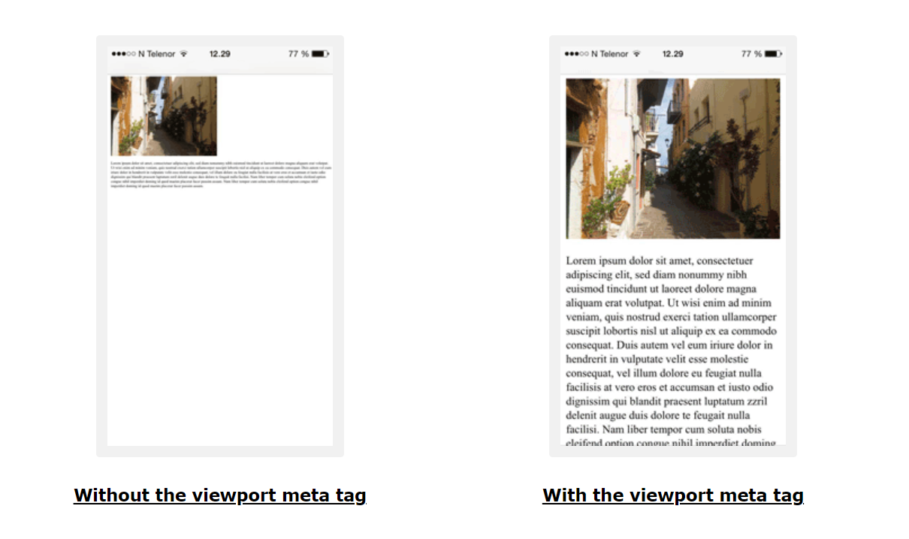

This page contains some comments on the technical, aesthetic, and accessability elements of this website.
All of these elemments are essential to the creation of a well-designed and usable site.
My overall design has met the specification outlined on UTS Canvas. The colors match well together. The website looks simple and aesthetic.
My website consists of 4 html pages & 1 css file along with an image sub-directory placed inside the websystems directory under the home directory. All the pages are linked together using the anchor tags so they can be clicked and go back and fourth. My website consists of at least 5 CSS classes, 1 CSS id, 1 div, 1 span, 1 table, 1 list, 1 image.
Viewport is also used in the meta section so it supports all browser types as well as different devices. The website can be viewed with the same dimensions and scaling so that the web pages fit the screen.
My website is structured as the picture below. Consists of header, navigation menu, body, and a footer in each page. In each of the body, I structured my page with h2 being the heading for each title and have dashed border around the headings. I used the p tags for most of my paragraphs and I use span elements when I wanted to change the color or style of some words.
I have chosen to separate the website into "parts" like this, because it means that you can rearrange the website easier in the future without having to modify much of the html. Most of the tags in all of my files are indented so it's easier to debug when you need to in the future

My website aesthetics are designed to be appealing, clear and easy to navigate and read for the end user.
Here are some of the aspects outlined the aesthetical feature of this website:
My Website is fundamentally designed to work for all people, whatever their hardware, software, language, location, or ability. When the Web meets this goal, it is accessible to people with a diverse range of hearing, movement, sight, and cognitive ability.
I have placed alt text in every img tag so that if the images cannot be fount the text will then be displayed.
There's no keyboard input required, however the screen needs to be clicked and scrolled
The website is easy to follow as its really simple with navigation bar on top of each page